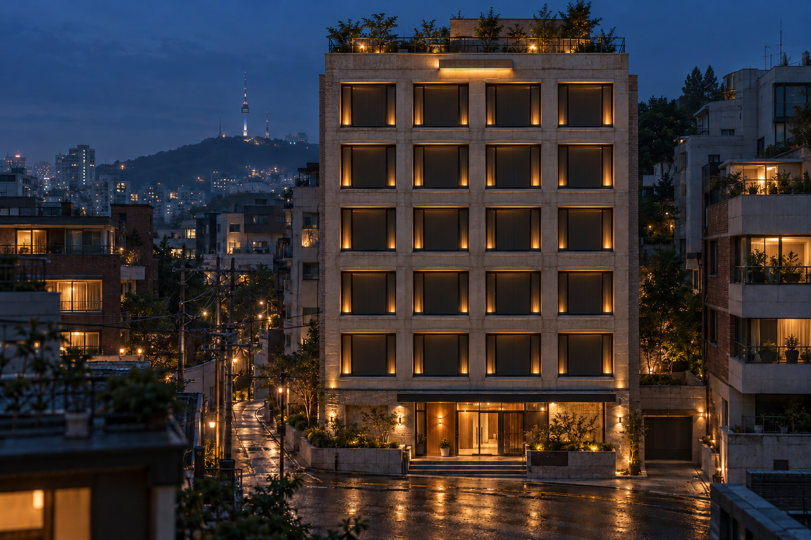

ROOM
19
WOMEN-ONLY RESIDENCE
08:00
DAY 01 · 월요일
Ⅱ
1×
4×
생활 기록
이웃
집 돌보기
⚙
WOMEN-ONLY RESIDENCE · YONGSAN
각자의 방,
함께 흐르는 하루.
누군가의 평범한 오늘에
작은 인사를 건네보세요.
여성 전용 · 용산구 한강로 19길

이웃을 만나는 중
얼굴에 마우스를 올려 알아보고, 눌러서 가까이.
ROOM19 · YOUR RESIDENCE
×